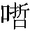
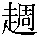

楊萬石，大名諸生也，生平有「季常之懼」。 季常之懼：〔何註〕季常，東坡友，方山子陳慥也，懼内。〔吕註〕陳慥字季常，蜀人，寓居黄岡，號方山子。又號龍丘子，詳見「怒獅之吼」註。〔手稿本某甲評〕一句提綱。妻尹氏奇悍，少迕之輒以鞭撻從事。〔馮評〕此篇寫悍婦，與江城一篇不同，入手便極寫。楊父年六十餘而鰥，尹以齒奴隸數。〔手稿本某甲評〕關目一一提明，爲後文伏案。楊與弟萬鍾常竊餌翁，不敢令婦知。然衣敗絮， 「妾王」：青本、黄本作「妾王氏」。恐貽訕笑，不令見客。〔但評〕綱常之變，乃至於此！○不能爲人夫，以致不能爲人子，不能爲人兄，不能爲人友，且不能爲人父，尚得謂之人也乎！〔馮評〕此更極寫一全無心肝之楊萬石。萬石四十無子，納妾王， 「姓馬」：康熙本、異史本、鑄本、二十四卷本作「馬姓」。旦夕不敢通一語。兄弟候試郡中，見一少年，容服都雅；與語，悦之，詢其姓字，自云：「介甫，姓馬。」 「楊翁」：黄本作「翁」。〔手稿本某甲評〕二語一篇貫索。由此交日密，焚香爲昆季之盟。〔但評〕與爲昆季，辱寞極矣！既别，約半載，馬忽攜僮僕過楊，值楊翁在門外曝陽捫虱； 捫虱：〔何註〕王猛見苻堅，捫虱而談當世之務。 「告馬」：鑄本作「告曰」。疑爲傭僕，〔但評〕其子本以傭僕視之，復奚疑？通姓氏使達主人。翁披絮去。或告馬 「引盡」：康熙本、異史本、鑄本、二十四卷本作「飲盡」。：「此即其翁也。」馬方驚訝，楊兄弟岸幘出迎。〔但評〕貽玷衣冠。○翁披絮去，子岸幘出，當日奇觀，千古奇聞，此情此狀，余亦曾於客間見之，第不至老父不温飽耳。登堂一揖，便請朝父，萬石辭以偶恙。促坐笑語，不覺向夕。萬石屢言具食，而終不見至。兄弟迭互出入，始有瘦奴持壺酒來。俄頃引盡， 「脱粟」：異史本、鑄本作「脱米」。坐伺良久，萬石頻起催呼，額頰間熱汗蒸騰。俄瘦奴以饌具出，脱粟失飪， 失飪：〔何註〕烹飪失宜也。 「悍嫂」：黄本作「悍婦」。殊不甘旨。食已，萬石草草便去。萬鍾襆被來伴客寢，馬責之曰：「曩以伯仲高義，遂同盟好。今老父實不温飽，行道者羞之！」〔但評〕直言責之，方不愧昆季之盟，行道者羞之，况已爲我老父乎？萬鍾泫然曰：「在心之情，卒難申致。家門不吉，蹇遭悍嫂， 「自炊」：康熙本作「自歡」。尊長細弱，横被摧殘。非瀝血 瀝血：〔吕註〕諫諍序：「瀝血抽誠，披胃見款。」○韓愈歸彭城詩：「刳肝以爲紙，瀝血以書辭。」之好，此醜不敢揚也。」〔但評〕尊長細弱，横被摧殘，對瀝血之好，衹應曰此仇不敢忘也，萬鐘之言可謂難兄難弟。馬駭嘆移時，曰：「我初欲早旦而行，今得此異聞，不可不一目見之。〔但評〕有所恃而不恐，是以敢見。請假閑舍，就便自炊。」 「婦知」：黄本作「嫂知」。〔馮評〕好漢。人避之不及也。萬鍾從其教，即除室爲馬安頓；夜深竊餽蔬稻，惟恐婦知。 「孤苦」：手稿本、康熙本、異史本、鑄本作「孤害」，今據青本、黄本、二十四卷本改。馬會其意力卻之，且請楊翁與同食寢；自詣城肆，市布帛，爲易袍褲。父子兄弟皆感泣。〔但評〕父子兄弟皆感泣，楊翁可憐，萬鐘可恥，萬石可殺。萬鍾有子喜兒，方七歲，夜從翁眠。馬撫之曰：「此兒福壽，過於其父，〔手稿本某甲評〕贊一句，後面投井、鄉捷具已伏根。但少年孤苦耳。」 「追逼」：黄本作「追迫」。「隨」：青本、黄本作「遂」。婦聞老翁安飽，大怒，輒駡，謂馬强預人家事； 强預人家事：〔吕註〕世説：「桓公欲遷都，孫綽上表。公曰：『君何不尋遂初賦，而强預人家國事。』」初惡聲尚在閨闥，漸近馬居，以示瑟歌 瑟歌：〔何註〕取瑟而歌，使之聞之也。之意。楊兄弟汗體徘徊，不能制止，而馬若弗聞也者。〔但評〕强預人家事，余亦嘗犯此忌。聞瑟歌時，亦學馬之若弗聞也者。迨萬不能忍，亦唾之駡之；第未能使其褲履俱脱，足纏縈道，至今猶忿然。妾王體妊 妊：〔何註〕娠也。五月，婦始知之，褫衣 褫衣：〔何註〕奪去其衣也。褫音豸，奪也。易·訟：「終朝三褫之。」△按：褫音尺。慘掠，已乃唤萬石跪受巾幗，操鞭逐出。值馬在外，慚懅 慚懅：〔何註〕懅音渠，亦慚也。後漢書·王霸傳：「霸慚懅而退。」不前；又追逼之始出。婦亦隨出， 「家人」：異史本、鑄本、二十四卷本作「家」。叉手頓足。觀者填溢。馬指婦叱曰：「去，去！」婦即反奔，若被鬼逐，褲履俱脱，足纏縈繞於道上，〔但評〕薄責示懲，猶輕視此婦。〔馮評〕真好看煞人。徒跣 徒跣：〔何註〕赤足也。而歸，面色灰死。少定，婢進襪履，着已噭啕大哭。家人無敢問者。 「奇焉」：二十四卷本作「奇馬」，康熙本作「奇馬焉」；黄本「焉」作「之」。馬曳萬石爲解巾幗，萬石聳身定息，如恐脱落；〔馮評〕或疑描寫太過，然天下必有之事。馬强脱之，而坐立不寧，猶懼以私脱加罪。〔但評〕擅脱巾幗重犯，其罪不小。探婦哭已乃敢入，趦趄而前。婦殊不發一語，遽起入房自寢，萬石意始舒，與弟竊奇焉。 「石歸」：鑄本、異史本、二十四卷本作「石去」。家人皆以爲異，相聚偶語。婦微有聞，益羞怒，遍撻奴婢；呼妾，妾創劇不能起，婦以爲偽，就榻搒之，崩注墮胎。〔馮評〕惡極。萬石於無人處，對馬哀啼，馬慰解之，呼僮具牢饌，更籌再唱，不放萬石歸。 「以刀」：青本作「以刃」。婦在閨房，恨夫不歸，方大恚忿，聞撬 撬：〔何註〕牽幺切，又音波，摇也。扉聲，急呼婢則室門已闢。有巨人入，影蔽一室，狰獰如鬼；俄又有數人入，各執利刃。婦駭絶欲號，巨人以刀刺頸， 「心耳」：青本、黄本作「心」。曰：「號便殺卻！」婦急以金帛贖命，巨人曰：「我冥曹使者，不要錢，但取悍婦心耳！」 「楊萬石」：黄本作「萬石」。「既已」：康熙本作「既而」。婦益懼，自投敗顙， 自投敗顙：〔何註〕以首投地，至於敗顙。巨人乃以利刃畫婦心而數之曰：如某事，謂可殺否？即一畫。凡一切凶悍之事，責數殆盡，刀畫膚革，不啻數十，〔馮評〕金聖嘆喜説快事，此真天下第一快事也。〔但評〕若搒妾墮胎，絶人宗嗣，王法不宥，天理不容。馬能以利刃畫其心，人皆呼快。余則爲之惜曰：「何不立刻殺卻！」末乃曰：「妾生子，亦爾宗緒，何忍打墮？此事必不可宥！」〔但評〕我亦曾見似此之人，不能如馬以術治之。愧甚，愧甚。乃令數人反接其手，剖視悍婦心腸。〔但評〕恨不即剖。婦叩頭乞命，但言知悔。〔但評〕凡口中自言知悔而乞命者，必不能悔，不肯悔。以法懼之者，其術必窮，故惟有殺之而已。俄聞中門啟閉，曰：「楊萬石來矣。既已悔過， 康熙本無「赤身」二字。姑留餘生。」〔馮評〕過接妙。紛然盡散。無何，萬石入，見婦赤身綳繫， 「疑馬」：青本、黄本作「疑焉」。心頭刀痕，縱横不可數；解而問之，得其故，大駭，竊疑馬。 「好合」：青本、黄本作「合好」。明日，向馬述之，馬亦駭。由是婦威漸斂，經數月不敢出一惡語。馬大喜，告萬石曰：「實告君，幸勿宣洩。前以小術懼之。〔但評〕婦人之悍妬，固生性使然，亦多由其夫人闒茸漸積而釀成之。故余嘗謂婦人之不德，婦人之不幸。而遇人之不淑也。尹之奇悍，豈盡尹之罪乎？以術懼之，而以實告之，亦馬疏忽處。既得好合， 「所可」：鑄本作「可所」。請暫别也。」遂去。婦每日暮，挽留萬石作侣，歡笑而承迎之。萬石生平不解此樂，遽遭之，覺坐立皆無所可。 「不可」：鑄本、異史本、二十四卷本、康熙本作「不能」。「悔」：二十四卷本作「諱」；鑄本作「晦」。〔但評〕「生平不解此樂」二語，千醜萬醜，一齊寫出。前日不敢私脱巾幗，可謂受辱不怨；此時坐立皆無所可，可謂受寵若驚。婦一夜憶巨人狀，瑟縮摇戰，萬石思媚婦意，微露其假。〔馮評〕叔寶無心肝一至於此。〔何評〕奴才。婦遽起，苦致窮詰，萬石自覺失言，而不可悔， 「勃然」：青本作「勃怒」。遂實告之。婦勃然大駡， 「長跽」：青本、黄本、二十四卷本、康熙本作「長跪」。萬石懼，長跽牀下。 「哀至漏三下，婦曰」：異史本作「哀愈切，婦曰」；青本、黄本「哀」作「哀懇」：「婦曰」，鑄本無此二字，黄本作「乃曰」。婦不顧，哀至漏三下，婦曰 「婦方」：鑄本、二十四卷本作「婦乃」。：「欲得我恕，須以刀畫汝心頭如干數，此恨始消。」〔但評〕必如是，方足嘗獻媚之忠。乃起捉厨刀。萬石大懼而奔，婦逐之。犬吠鷄騰，家人盡起。萬鍾不知何故，但以身左右翼兄。婦方詬詈， 「斃」：黄本作「死」。忽見翁來，睹袍服，倍益烈怒；即就翁身條條割裂，批頰而摘翁髭。萬鍾見之怒，〔馮評〕稍有心肝者，斷耐忍不得。以石擊婦中顱，顛蹶而斃。 「婦蘇」：鑄本作「婦復蘇」。萬鍾曰：「我死而父兄得生，何憾！」遂投井中，救之已死。〔但評〕萬鐘一擊，差强人意，惜其投井太速，身死而父兄仍不得生，未免齎恨於地下耳。移時，婦蘇， 「俟」：青本、黄本作「候」。「塊」：黄本作「飯」。〔但評〕偏不死。聞萬鍾死，怒亦遂解。既殯，弟婦戀兒，矢不嫁；婦唾駡不與食，醮去之。遺孤兒，朝夕受鞭楚。俟家人食訖，始啖以冷塊。 「碩謝」：康熙本作「婦謝」。積半歲，兒尪羸，僅存氣息。一日，馬忽至，〔馮評〕天上飛來。萬石囑家人勿以告婦。馬見翁襤縷如故大駭，又聞萬鍾殞謝， 「一綫」：青本作「綫」。「語數」：康熙本作「數語」。頓足悲哀。兒聞馬至，便來依戀，前呼馬叔。馬不能識，審顧始辨，驚曰：「兒何憔悴至此？」翁乃囁嚅， 囁嚅：〔何註〕欲言不言也。具道情事。馬忿然謂萬石曰：「我曩道兄非人，果不謬。兩人止此一綫——殺之，將奈何？」萬石不言，惟伏首貼耳而泣。〔但評〕無丈夫氣，衹有一哭。坐語數刻， 「含」：黄本作「萬石含」。「出耶」：二十四卷本作「出之耶」。婦已知之，不敢自出逐客，但呼萬石入，批使絶馬。含涕而出，批痕儼然。馬怒之曰：「兄不能威，獨不能斷『出』耶？ 「忍受」：鑄本作「忍之」。〔但評〕我亦嘗謂：「畏内之人，雖不能威，何爲亦不能斷出？」友人曰：「子言左矣！能威者即能斷出，而决不至於出；不能威者必至於應出，而决不能斷；蓋能斷之人，必須能威之人也。」毆父殺弟，安然忍受， 「理須」：二十四卷本作「須以」。「威劫，便殺卻」：康熙本、鑄本作「殺，即便殺卻」。何以爲人？」〔馮評〕人有不可解者，受妻子之氣而無怨心，受父母之責而有違言。萬石能斷則能威矣。天地生人，另是一種肺腸，不可以常理測。馬生奈何！〔鑄本無名氏評〕楊萬石真千古之羞人也。世果有此人，即裂肝剖心，亦不足盡其罪。萬石欠伸，似有動容。馬又激之曰：「如渠不去，理須威劫，〔但評〕果能威劫，則能去矣。便殺卻， 「極」：鑄本作「拯」。「虧」：青本、黄本作「虞」。勿懼！僕有二三知交，都居要地，必合極力，保無虧也。」 「卻走」：鑄本、康熙本作「卻步」。萬石諾，負氣疾行，奔而入，適與婦遇。叱問：「何爲？」萬石遑遽失色，以手據地，曰：「馬生教余出婦。」〔手稿本某甲評〕聲情畢現。〔但評〕聞有總戎某，爲婦所逼。其麾下慫恿戎裝帶劍而入以威之，負氣疾行而入。婦叱問何爲，總戎失色，以手據地曰：「請夫人閲操。」正與此對。○負氣而入，本是假氣，以手據地而言，本是真言。讀者至此，無不噴飯；余獨勃然，若將按劍，不知何故。〔馮評〕「無恨心」三字如牛渚然犀。○似後主語。〔何評〕奴才。婦益恚，顧尋刀杖，萬石懼而卻走。 「以足」：二十四卷本作「一足」。馬唾之曰：「兄真不可教也已！」遂開篋，出刀圭藥，合水授萬石飲，曰：「此『丈夫再造散』。〔手稿本某甲評〕名色新奇。〔但評〕「丈夫再造散」，方名甚奇，藥力甚速。果爾，願刊布三千大千世界，普救恒河沙數畏内男子。但藥力終有消時，奈何，奈何！〔馮評〕散名奇絶。〔何評〕名目奇。所以不輕用者，以能病人故耳。今不得已暫試之。」飲下，少頃，萬石覺忿氣填胸，〔但評〕忿氣，駭人。如烈焰中燒，刻不容忍；直抵閨闥，叫喊雷動。〔但評〕叫喊駭人。婦未及詰，萬石以足騰起， 「駡」：異史本、鑄本作「詈」。〔但評〕足騰起，駭人。婦顛去數尺有咫， 尺有咫：〔何註〕咫，八寸也。周制以人體爲法，中婦人手長八寸謂之咫。肅慎氏貢楛矢，其長尺有咫。即復握石成拳，擂擊 擂擊：〔何註〕擂音雷，研物也。俗謂擊爲擂。無算。〔但評〕握石擂擊，駭人。〔馮評〕勇猛可觀，幾比巨人刀劃。婦體幾無完膚，嘲

嘲：〔何註〕音
制，鳥聲也。怒急不成語也。△按：同哳，音扎。猶駡。 「地上」：鑄本作「地下」。萬石於腰中出佩刀，〔但評〕腰中出佩刀，駭人。婦駡曰：「出刀子，敢殺我耶？」萬石不語，割股上肉大如掌，擲地上， 鑄本「死力」作「力死」，並異史本「漸消」作「消」。〔但評〕割股肉擲地，更駭煞人。方欲再割，婦哀鳴乞恕。萬石不聽，又割之。〔但評〕乞恕不聽又割，更駭煞人。家人見萬石凶狂，相集死力掖出。馬迎去，捉臂相用慰勞。萬石餘怒未息，屢欲奔尋，馬止之。少間，藥力漸消， 「嗒焉」：鑄本、異史本作「嗒」，黄本作「嗒然」，康熙本作「塔焉」。嗒焉若喪， 「譬」：康熙本、異史本、鑄本作「譬之」。「餒」：異史本作「綏」。〔但評〕於此，當謂人曰：「欲勇者賈餘勇。」惜藥力不能除去病根，奈何，奈何！馬囑曰：「兄勿餒。乾綱之振，在此一舉。夫人之所以懼者，非朝夕之故，其所由來者漸矣。〔但評〕吾固曰：「天下之悍婦，皆天下闒茸之人成之也。」譬昨死而今生，須從此滌故更新；再一餒， 「責數已」：青本、黄本作「責數」。則不可爲矣。」〔但評〕昨死不死，今生不生。積固難滌，新暫難更。一蹶不振，一餒難興。於彼何尤，再造無靈。吁嗟乎！再造無靈。○丈夫氣而資藥力，則未有不餒者。乾綱之不振，雖有神仙，亦未如之何也矣。遣萬石入探之。婦股慄心懾， 股慄心懾：〔何註〕慄，戰也。心懾，懾音習，心服也。△按：懾音社，又音牒。倩婢扶起，將以膝行，止之乃已。出語馬生，父子交賀。馬欲去，父子共挽之，馬曰：「我適有東海之行，故便道相過，還時可復會耳。」月餘，婦起，賓事良人； 賓事良人：〔吕註〕左傳·僖三十三年：「臼季使過冀，見冀缺耨。其妻饁之，敬，相待如賓。」久覺黔驢無技， 黔驢無技：〔吕註〕柳宗元三戒：「黔無驢，有好事者船載以入。虎見之，龐然大物也，以爲神。蔽林間窺之。他日，驢一鳴，虎大咳，遠遯，以爲且噬己也，甚恐。然往來視之，覺無異能者。稍近，益狎，蕩倚冲冒。驢不勝怒，蹄之。虎因喜，計之曰：『技止此耳。』因跳踉大，斷其喉，盡其肉，乃去。」漸狎，漸嘲，漸駡，〔馮評〕三「漸」字畫鬼伎倆。居無何，舊態全作矣。〔但評〕人之所以懼者，未有不自嘲狎起。翁不能堪，宵遯，至河南，隸道士籍。萬石亦不敢尋。年餘，馬至，〔馮評〕忽去忽來，仙乎，仙乎！不知仙人何取於萬石，而爲之盡情盡致如此。知其狀，怫然責數已， 「驅策逕去」：二十四卷本作「驅竟去」。〔但評〕何必責之，徒污人口。立呼兒至，置驢子上，驅策逕去。 「鄉人」：鑄本作「鄉」。「劣行」：青本、黄本作「劣」。由此鄉人皆不齒萬石。學使案臨，以劣行黜名。 「煨」：黄本作「灰」。〔但評〕衣冠禽獸，黜之已晚。○此等生員，留之污穢世界。又四五年，遭回禄，居室財物，悉爲煨燼， 煨燼：〔何註〕音偎藎，火之餘也。 「相戒」：青本、黄本作「戒」。〔但評〕悍火成災。延燒鄰舍。村人執以告郡，罰鍰 罰鍰：〔何註〕鍰音還，六兩也。書·吕刑：「其罰百鍰。」煩苛，於是家産漸盡，至無居廬。近村相戒無以舍舍萬石， 「絶拒之」：黄本、二十四卷本作「拒絶之」。尹氏兄弟怒婦所爲，亦絶拒之。 「拒」：康熙本作「詎」。「一貧」：青本、黄本作「以貧」。萬石既窮，質妾於貴家，偕妻南渡；至河南界，資斧已絶，婦不肯從，聒夫 聒夫：〔何註〕絮聒其夫也。再嫁。〔但評〕聒夫再嫁，天下之悍婦妬婦，鮮有能爲貞婦者，此情理之所必然也。〔何評〕可知。適有屠而鰥者，以錢三百貨去。〔但評〕悍妬之婦，無有不淫，嫁得屠人，畢生吃着不盡矣。萬石一身，丐食於遠村近郭間。至一朱門，閽人訶拒不聽前。少間一官人出，萬石伏地啜泣。官人熟視久之，略詰姓名，驚曰：「是伯父也！何一貧至此？」 「邑庠」：青本、黄本作「庠」。萬石細審，知爲喜兒，不覺大哭。從之入，見堂中金碧焕映。俄頃，父扶童子出，相對悲哽。萬石始述所遭：初，馬攜喜兒至此，數日，即出尋楊翁來，使祖孫同居。又延師教讀。〔馮評〕如此友朋衹合於神仙中求之。十五歲入邑庠， 「感傷」：二十四卷本作「傷感」。次年領鄉薦，〔馮評〕映上福相來。始爲完婚。乃别欲去，祖孫泣留之，馬曰：「我非人，實狐仙耳，道侣相候已久。」遂去。孝廉言之，不覺惻楚。因念昔與庶伯母同受酷虐，倍益感傷， 「孔」：青本、黄本作「扎」。遂以輿馬賫金贖王氏歸。年餘，生一子，因以爲嫡。尹從屠半載，狂悖 狂悖：〔何註〕悖通誖，惑也，猶狂惑也。猶昔。夫怒，以屠刀孔其股， 「不良」：鑄本作「不利」。穿以毛綆懸梁上，荷肉竟出。〔馮評〕比巨人之劃刀，萬石之藥力，更爽快煞人。號極聲嘶，鄰人始知。解縛抽綆，一抽則呼痛之聲震動四鄰。以是見屠來則骨毛皆竪。後脛創雖愈，而斷芒遺肉内，終不良於行； 「如縻」：異史本、鑄本作「如麻」。〔但評〕扎之以屠刀，穿之以毛綆，斷芒遺肉，股屈不伸，肉食其可得乎？顧安得天下許多屠人，收盡天下無數悍妒婦人也。猶夙夜服役，無敢少懈。屠既横暴，每醉歸則撻詈不情。至此始悟昔之施於人者亦猶是也。〔何評〕如何。一日，楊夫人及伯母燒香普陀寺，近村農婦並來參謁。尹在中悵立不前。王氏故問：「此伊誰？」家人進白：「張屠之妻。」便訶使前，與太夫人稽首。王笑曰：「此婦從屠，當不乏肉食，何羸瘠乃爾？」尹愧恨，歸欲自經，綆弱不得死，屠益惡之。歲餘，屠死。途遇萬石，遥望之，以膝行，淚下如縻。 縻：〔何註〕音眉，牛轡也。△按：音迷。據文義，縻當爲索，繩。 「懼内」：手稿本、康熙本作「内懼」，今據二十四卷本、異史本、鑄本改。青本、黄本無此二字。萬石礙僕，未通一言。歸告侄，欲謀珠還。〔但評〕無恥。〔何評〕奴才。侄固不肯。婦爲里人所唾棄，久無所歸，依羣乞以食，萬石猶時就尹廢寺中。〔但評〕既謀珠還，又同苟合，萬石到底非人。侄以爲玷，陰教羣乞窘辱之，乃絶。此事余不知其究竟，後數行，乃畢公權 畢公權：〔吕註〕名世持，淄川人。康熙戊午解元。撰成之。異史氏曰：「懼内， 「續」：黄本作「讀」。天下之通病也。〔馮評〕謂天下之通病，聊齋奈何？然不意天壤之間乃有楊郎！寧非變異？余嘗作妙音經 妙音經：〔何註〕此借梵語爲房幃之戲謔耳。之續言， 「竊以天道化生萬物」：手稿本於此句上端書眉，有「妙音經跋」四字，二十四卷本於此句前一行頂格書「妙音經跋」四字。謹附録以博一噱：
『竊以天道化生萬物， 「移乾」：青本、黄本作「推乾」。重賴坤成；男兒志在四方，尤須内助。同甘獨苦，勞爾十月呻吟；就濕移乾， 「第陰」句：手稿本、康熙本、青本、黄本、二十四卷本無此二句，今據作者妙音經序言及鑄本、異史本補。苦矣三年嚬笑。 嚬笑：〔何註〕嚬，皺眉。笑，解顔也。韓昭侯曰：「明主愛一嚬一笑。」此顧宗祧而動念，君子所以有伉儷之求；瞻井臼而懷思，古人所以有魚水之愛也。第陰教之旗幟日立，遂乾綱之體統無存。 「牀上」：手稿本原作「牀頭」，塗改。始而不遜之聲，或大施而小報；繼則如賓之敬，竟有往而無來。衹緣兒女深情，遂使英雄短氣。〔但評〕兒女情深，英雄氣短，茫茫苦海，同此病源。牀上夜叉坐， 牀上夜叉：〔吕註〕宣室志：「吴生者，江南人，遊會稽，娶劉氏女。後數年，宰於雁門，與劉氏偕之官。吴獵於野，獲狐兔甚多，致庖舍下。吴出，劉入庖舍，取狐兔生啖之。吴疑劉爲他怪。旬餘，吏以一鹿獻吴。吴命致於庭，言將遠適，匿身潛伺之。見劉氏散髮袒肱，目眦盡裂，執鹿而食。乃召吏卒持兵杖而入。劉見之，盡去襦袖，挺然立庭，乃一夜叉耳。」 「欲投」：康熙本作「投」。任金剛亦須低眉； 金剛低眉：〔吕註〕談藪：「薛道衡遊鍾山開善寺，謂小僧曰：“金剛何爲努目？菩薩何爲低眉？”答曰：“金剛努目，所以降伏四魔；菩薩低眉，所以慈悲之道。”」釜底毒煙生， 釜底毒煙生：〔吕註〕未詳。○酉陽雜俎：「江淮王生善卜。有賈客張瞻將歸，夢炊臼中，問生。生曰：『釜，婦也。臼中炊，無婦也。君歸不見妻矣。』」○唐元稹詩：「青溪蒸毒煙。」即鐵漢無能强項。 鐵漢無能强項：〔吕註〕駭聞録：「李遵懿仕偽蜀，有婦態。蜀平，太祖曰：『有此態耶？』」以氈頭箭射之，正中其腹。李不動。太祖曰：『外柔内勁。』授供奉官。後握兵江淮，人號鐵漢。」又宋史：「梁師成使吴默持書啖劉安世。安世還其書，不答。」蘇軾評元祐人物，曰：「器之真鐵漢。」器之，安世字也。○後漢書·董宣傳：「徵爲洛陽令，時湖陽公主蒼頭白日殺人。及主出行，而以奴驂乘。宣於夏門亭候之，乃大言數主之失，叱奴下車，因格殺之。主即還宫訴帝。帝使宣叩頭謝罪。宣不從。强使頓之。宣兩手據地，終不肯俯。帝因敕强項令出。」△按：李遵懿事見見聞録。秋砧 秋砧：〔何註〕砧，搗衣石也。庾信詩：「秋砧調急節。」之杵可掬，不搗月夜之衣；麻姑之爪能搔， 麻姑之爪能搔：〔吕註〕神仙傳：「王方平降蔡經家，遣人召麻姑。久之始至。是好女子，年可十八九許，手似鳥爪。經見之，心中念：『背上大癢時，得此搔之當佳。』方平已知之，即鞭經曰：『麻姑神人，汝謂其爪可爬背耶？』」輕拭蓮花之面。 蓮花之面：〔吕註〕舊唐書·楊再思傳：「張昌宗以姿貌見寵幸。再思諛之曰：『人言六郎似蓮花，再思以爲蓮花似六郎。』」小受大走， 小受大走：〔何註〕崔鈞對其父烈曰：「舜之事，小杖則受，大杖則走。」〔吕註〕帝王世紀：「舜能和諧，小杖則受，大杖則走。」又説苑：「曾皙援杖擊曾子，仆地，有頃乃蘇。退，鼓琴而歌。孔子責之曰：『小杖則待，大杖則走。』」直將代孟母投梭； 孟母投梭：〔吕註〕列女傳：「孟子學而歸，母方織。問所學，自若也。母乃投梭，以刀斷其織曰：『子之廢學，若吾斷斯織也！』孟子因勤學不殆。」婦唱夫隨， 婦唱夫隨：〔吕註〕孔叢子：「十五許嫁而後從夫，是陽動而陰應，男倡而女隨之義也。」關尹子：「夫者倡，婦者隨。」翻欲起周婆制禮。 周婆制禮：〔吕註〕妬記：「謝太傅妻劉夫人，不令公有别房。公深好聲樂。後欲立妓妾，兄弟外甥等漸達此旨，共問訊劉夫人，因方便稱：『關雎、螽斯，有不忌之德。』夫人知以諷己，乃問『誰撰此詩？』答云：『周公。』夫人曰：『周公是男子相爲爾；如使周姥撰詩，當無此也。』」〔但評〕孟母投梭，視之如子，周婆制禮，恨極我公。婆娑跳擲， 婆娑跳擲：〔吕註〕未詳。或云此本陸次雲峒谿纖志中跳月記，因録其序於後：「苗童之未娶者曰羅漢，女之未嫁者曰觀音。皆髻插鷄翎，於二月羣聚，歌舞之餘乃自相擇配。余有跳月記以詳其事。」記載吴青壇説鈴，共五百餘言，不備録。○按記中無此二句字樣。後又一條云：「苗人每遇令節，男子吹笙撞鼓，婦隨男後，婆娑進退，舉手頓足，疾徐可觀，名曰踹堂之舞。」或本此。停觀滿道行人；嘲鳴嘶，撲落一羣嬌鳥 「嘲」句：〔吕註〕未詳。○盧照鄰詩：「一羣嬌鳥共啼春。」。惡乎哉！呼天籲地，忽爾披髮向銀牀； 銀牀：〔吕註〕古樂府：「後園鑿井銀作牀，金瓶素綆汲寒漿。」○名義考：「銀牀，轆轤架也。」醜矣夫！轉目摇頭，猥欲投繯延玉頸。 「氣同」：手稿本原作「勢同」，塗改。當是時也，地下已多碎膽， 碎膽：〔吕註〕南史：「齊王融矯詔立竟陵王子良，太學生魏準鼓成其事。及融誅，召準入舍人省詰問，準懼而死，舉體皆青。人以爲膽碎矣。」天外更有驚魂。 驚魂：〔吕註〕拾遺記：「越謀滅吴，蓄天下奇寶美人異味進於吴。又有美女二人：一名夷光，一名修明，以貢於吴。竊窺者莫不動心驚魂，謂之神人。」○夷光、修明即西施、鄭旦之别名。〔但評〕嚇破愚兒膽，那有丈夫氣！北宫黝未必不逃，孟施舍焉能無懼？將軍氣同雷電， 「撩天」：異史本、鑄本作「掩天」。一入中庭，頓歸無何有之鄉； 無何有之鄉：〔吕註〕莊子·逍遥遊：「今子有大樹，患其無用，何不樹之於無何有之鄉，廣莫之野？」大人面若冰霜，比到寢門，遂有不可問之處。〔但評〕「將軍氣同雷電」，鋭氣每挫夫人城，「大人面若冰霜」，鬼面常露夜叉國。豈果脂粉之氣，不勢而威？胡乃骯髒 骯髒：〔何註〕音沆葬，體胖也。後漢書·趙壹傳：「骯髒倚門邊。」△按：骯髒同抗髒，高亢正直貌。之身，不寒而慄？ 不寒而慄：〔吕註〕綱鑒·漢武帝紀：「義縱爲定襄太守，掩獄中重罪輕繫及私入視者一捕鞫，曰爲死罪解脱。是日報殺四百餘人，郡中不寒而慄。」猶可解者：〔馮評〕真不可解。魔女翹鬟來月下，何妨俯伏皈依？最冤枉者：鳩盤蓬首到人間，也要香花供養。 香花供養：〔吕註〕金剛經：「在在處處，皆堂供養。以諸花香，而散其處。」〔但評〕可解者終是强解，最冤者總不知冤。聞怒獅之吼， 怒獅之吼：〔吕註〕傳燈録：「釋迦佛生時，一手指天，一手指地，作大獅子吼云：『天上地下，唯吾獨尊。』」○蘇軾詩：「龍丘居士亦可憐，談空説有夜不眠；忽聞河東獅子吼，拄杖落手心茫然。」按：東坡謫居黄岡，與陳慥遊。慥妻柳氏最悍妬，慥每宴客有聲妓，柳氏則以杖擊照壁大呼，客至爲散去。河東柳郡也。杜詩有「河東女兒身姓柳」之句，故東坡引以爲戲。吼，獅子聲，蓋借用傳燈録中語，以其好參禪也。△按：釋迦事見續傳燈録。則雙孔撩天； 「彼」：黄本作「使」。聽牝鷄之鳴， 牝鷄之鳴：〔吕註〕書·牧誓：「牧鷄司晨，惟家之索。」則五體投地。 五體投地：〔吕註〕楞嚴經：「阿難聞已，重複悲淚，五體投地，長跪合掌，而白佛言。」○按：五體，謂手足與首也。登徒子淫而忘醜， 「登徒子」句：〔吕註〕宋玉登徒子好色賦·序：大夫登徒子侍於楚襄王，短宋玉。玉因著登徒子好色賦。〔何註〕登徒子醜而寵愛之，是好淫，非好色也。迴波詞 迴波詞：〔吕註〕本事詩：「唐中宗朝，御史大夫裴談妻悍妬，談畏之。時韋庶人頗襲武氏風軌，中宗漸畏之。内宴唱迴波詞，有優人詞曰：『迴波爾時栲栳，怕婦也是大好。外邊衹有裴談，内裏無過李老。』韋后意色自得，以束帛賜之。」憐而成嘲。設爲汾陽之婿， 「設爲」句：〔何註〕汾陽婿多因岳而貴者。史：郭子儀八子七婿皆爲朝廷顯貴。」立致尊榮，媚卿卿良有故；若贅外黄之家， 贅外黄：〔吕註〕史記·張耳傳：「張耳者，大梁人也。嘗亡命遊外黄。外黄富人女甚美，嫁庸奴，亡其夫去抵父客。父客素知張耳，乃謂女曰：『必欲求賢夫，從張耳。』女聽，乃卒爲請，决嫁之。』」不免奴役，拜僕僕將何求？彼窮鬼 窮鬼：〔吕註〕韓愈送窮文：「三呼窮鬼而送之。」自覺無顔， 「悍婦」：手稿本、青本、異史本、二十四卷本、黄本作「怨婦」，今據康熙本、鑄本改。任其斫樹摧花， 斫樹摧花：〔吕註〕潛確類書：「武歷陽女嫁阮宣，性妬。有桃一枝，花葉可愛，宣嘆美之。武怒，取刀斫其樹，摧其花。」止求包荒 包荒：〔何註〕謂包容荒穢也。〔吕註〕易·泰：「包荒用馮河。」於悍婦； 「借助」：二十四卷本作「借重」。「教吟」：康熙本「吟」作「呻」。如錢神 錢神：〔吕註〕晉魯褒傷時貪鄙，著錢神論以刺之。其略曰：「錢之爲體，有乾坤之象，親之如兄，字曰孔方：無德而尊，無勢而熱。」又曰：「見我家兄，莫敢仰視。凡今之人，惟錢而已。」可云有勢，乃亦嬰鱗犯制， 嬰鱗犯制：〔何註〕韓非子·説難：「龍喉下有逆鱗徑尺，攖之則殺人。人主亦有之。」攖，觸也。△按：嬰通攖。〔吕註〕梁張纘妬婦賦：「忽有逆其妬鱗，犯其忌制。赴湯蹈火，瞋目攘袂。或棄産而焚家，或投兒而害婿。」不能借助於方兄。 方兄：〔何註〕錢也。〔吕註〕蘇軾詩：「雖無孔方兄，顧有法喜妻。」〔但評〕窮鬼因衣食而怨言，豪家爲姫妾而拚命。豈縛遊子之心，惟兹鳥道？抑消霸王之氣，恃此鴻溝？ 惟兹鳥道，恃此鴻溝：〔何註〕唐李白詩：「西當太白有鳥道。」註道窄，僅容鳥過而已。〔吕註〕史記·高祖紀：「項羽與漢約：中分天下，割鴻溝以西者爲漢，鴻溝而東者爲楚。」然死同穴、生同衾，何嘗教吟「白首」？ 吟白首：〔吕註〕西京雜記：「司馬相如將聘茂陵女爲妾，卓文君作白頭吟以自絶云：『凄凄重凄凄，嫁女不須啼。願得同心人，白頭不相離。』」 「麈」：康熙本作「塵」。而朝行雲、暮行雨，輒欲獨占巫山。 巫山：〔何註〕楚襄王夢神女曰：「朝爲行雲，暮爲行雨，朝朝暮暮，巫山之下。」恨煞「池水清」， 池水清：〔吕註〕王氏見聞：「韓伸者，渠州人也。善飲博，經年忘其家。嘗遊謁於東川，聚其博徒，挈飲妓而致幽會。夜坐洽樂之際，其妻自家領女僕持棒伺於暗處。伸方高唱池水清不絶，忽於腦後一棒，打落幞頭，撲滅燈燭。伸即竄於牀下。時輩呼伸爲池水清。」空按紅牙 紅牙：〔吕註〕宋史·錢俶傳：「太平興國三年，俶貢紅牙樂器二十二事。」王翰吹簫圖詩：「吹到梁州移别調，君王親爲按紅牙。」按：紅牙，拍板也。玉板；憐爾「妾命薄」， 妾命薄：〔吕註〕詩紀：「漢許皇后云：奈何妾薄命。曹子建因以『妾薄命』名篇。」獨支永夜寒更。蟬殼鷺灘， 蟬殼鷺灘：〔吕註〕青衣曲：「蓋蘭秀菊芳之質，的是可兒，步香鳴珀之人，夙推房老。鄭家慧婢，雅擅談經；宋氏雛姬，亦能修史。故青衣作賦，中郎之屬愛偏深：白纨裁詩，王岷之寄情不淺。以致木蘭持檝，桃葉迎歸；紫燕騰號，人種追至。情憐綺袖，非徒玉川之赤脚標名；淚灑犀簾，豈似志和之樵音解意哉！乃有戲引翾鳳，阿堵立櫻桃花下；閑尋春草，蕭郎盼楊柳陰邊。不懼搴幃脂虎，暗渡藍橋；甘爲蟬翼化蜂，酣眠香國。擬三熟三偷之數，强半雲半雨之歡。凡此情緣，亦供笑柄；借歌碧玉，私語紅牙。」○第一齣：老僧入定。註：「倦眼迷蒙，凝神摹想，亦驚亦喜，如醉如癡。」。第二齣：野狐聽冰。註：「進退兩難，憂疑交集。牆垣屬耳，草木皆兵。」○第三齣：金蟬脱殼。註：「探首出衾，握衣坐蓐，半牀虎踞，兩膝蛇行。」○第四齣：鷺鶿踏灘。註：「青燈半滅，白足雙垂，踏地無聲，騰空有力。」○第五齣：空庭鶴舞。註：「室暗心虚，肱長足蹜，步空躡影，蕩魄離魂。」○第六齣：伯牙撫琴。註：「作知音客，彈不弦琴，據榻横撫，挽舟暗渡。」○第七齣：饑鷹攫兔。註：「突兀摩空，扶摇健舉，翮蹄怒逐，羽血交飛。」○第八齣：櫓聲欸乃。註：「三更漏静，萬籟聲銷，垂帳深深，敲鈎戛戛。」○第九齣：吴牛喘月。註：「力乏神疲，手顫足冷，挾氣而喘，有聲如牛。」○第十齣：離亭泣别。註：「臨歧惴惴，執手依依，重訂新盟，毋忘夙好。」○第十一齣：下第歸心。註：「出路軒昂，歸途寂寞，撫躬抱愧，回首傷心。」○第十二齣：落花驚夢。註：「燈影花殘，春魂夢斷，因緣俱了，色相俱空。」○按：第四齣，一本作濯足滄浪，註同。喜驪龍之方睡； 驪龍方睡：〔吕註〕莊子·列禦寇：「河上人緯蕭而食，其子入淵，得千金之珠。翁曰：『此珠在驪龍頷下，子得之，遭其睡也。』」〔何註〕河上翁家貧，其子没河得千金珠。翁曰：「珠在驪龍含下，子遭其睡也；使其寤，子爲齏粉矣。」犢車麈尾， 犢車麈尾：〔吕註〕妬記：「王導妻曹夫人性妬。導憚之，乃密營别館，衆妾羅列。夫人知之，命駕尋討。導飛轡出門，乃捉麈尾，以柄助御者驅車，得先至。蔡司徒聞而笑之。一日，謂導曰：『朝廷欲加公九錫，有短轅犢車，長柄麈尾。』王公大怒，謂人曰：『吾往與羣兒共遊洛中，何曾聞有蔡克兒耶？』」 「吹竽」：黄本作「吹芋」。「旬餘」：二十四卷本作「旬内」。恨駑馬之不奔。榻上共卧之人，撻去方知爲舅； 「榻上」句：〔吕註〕要録：「車武子妻大妬。武子呼其婦兄共宿，取一絳裙衣挂屏風上。其婦拔刀徑上牀，發被，乃其兄也，大慚而退。」牀前久繫之客，牽來已化爲羊。 「牀前」句：〔吕註〕江盈科談言：「京邑有士人婦大妬忌，於夫小則詬詈，大則捶打。嘗以長繩繫夫脚。夫密與巫嫗爲計，因婦眠入厠，以繩繫羊，婿緣牆走避。婦覺，牽繩而羊至。大驚，召問巫，巫曰：『娘子積惡，先人怪責，故郎君變成羊。若能改過，乃可祈請。』婦因悲號，抱羊慟哭，自咎悔誓。巫乃令七日齋，舉家悉避，於室中祭鬼神師，祝羊還復本形。婿徐徐還。後復妬忌，婿因伏地作羊鳴。婦驚起徒跣，呼先人爲誓，於是不復敢爾。」〔但評〕妒之受病，直入膏肓；妒之貽羞，難灑江漢。需之殷者僅俄頃，毒之流者無盡藏。買笑 買笑：〔吕註〕賈氏説林：「武帝與麗娟看花，而蔷薇始開，態若含笑。帝曰：『此花絶勝佳人笑也。』麗娟戲曰：『笑可買乎？』帝曰：『可。』麗娟遂命侍者取黄金百斤，作買笑錢奉帝。」李白詩：「黄金白璧買歌笑，一醉累月輕五侯。」纏頭，而成自作之孽， 自作之孽：〔何註〕書·太甲：「自作孽不可逭。」太甲必曰難違；俯首貼耳，而受無妄之刑，李陽亦謂不可。 李陽以爲不可：〔何註〕晉書·王衍傳：「衍妻郭氏，賈后之親，藉宫中之勢，衍不能禁。時有幽州刺史李陽，京師大俠也，郭氏素憚之。衍謂郭曰：『非但我言卿不可，李陽亦謂不可。』郭氏爲之小損。」東坡詩：「但與時時説李陽。」〔吕註〕世説：「王夷甫妻，郭泰寧女，聚斂無厭。夷甫患之，而不能禁。時其鄉人幽州刺史李陽，京都大俠，郭氏憚之。夷甫驟諫之，乃曰：『非但我言卿不可，李陽亦謂卿不可。』郭氏小爲之損。」酸風凛冽，吹殘綺閣之春；醋海汪洋，淹斷藍橋 藍橋：〔何註〕見辛十四娘「玉杵」註。之月。〔但評〕酸風醋海中，吹散多少癡魂，淹殺多少艷骨！又或盛會忽逢，良朋即坐：斗酒藏而不設， 斗酒藏而不設：〔吕註〕蘇軾後赤壁賦：「我有斗酒，藏之久矣，以待子不時之需。」且由房 由房：〔何註〕詩註：「由，從也。房，屋也。」出逐客之書； 逐客之書：〔吕註〕史記·秦始皇本紀：「十年，大索逐客。李斯上書説，乃止逐客令。」故人疏而不來， 故人疏而不來：〔吕註〕孟浩然詩：「多病故人疏。」遂自我廣絶交之論。 廣絶交之論：〔何註〕朱穆著絶交論，劉孝標廣絶交論：五術，指勢交、賄交、談交、窮交、量交言也。甚而雁影分飛，涕空沾於荆樹； 荆樹：〔何註〕孝子傳：「古有兄弟，忽欲分異。出門見三荆同株，接葉連蔭。嘆曰：『木猶欣聚，况我而殊哉！』還爲雍和。」〔吕註〕續齊諧記：「京兆田真、田慶、田廣兄弟三人，共議分財，生貲皆平均，惟堂前一荆樹，共議欲斫爲三片，明日就截之。其樹即枯死，狀如火然。真往見之，大驚，謂諸弟曰：『樹本同株，聞將分斫，所以憔悴。是人不如木也。』因不復解。樹應聲榮茂。兄弟相感，合財寶，遂爲孝門。真仕至大中大夫。」鸞膠 鸞膠：〔吕註〕合璧事類：「漢武帝時，西海獻鸞膠。帝弦斷，以膠續弦兩端，遂相著，終日射，不斷。帝大悦，名續弦膠，以鸞血爲之也。今取爲續婚之喻。」○宋陶穀使江南，贈妓秦若蘭詞：「琵琶發盡相似調，知音少；待得鸞膠續斷弦，是何年？」再覓，變遂起於蘆花。 蘆花：〔何註〕閔損、閔革、閔蒙事。〔吕註〕蕭廣濟孝子傳：「閔子騫爲後母所苦，衣以蘆花。父知，欲出之。子騫曰：『母在一子單，母去三子寒。”遂止。」故飲酒陽城，一堂中惟有兄弟； 「故飲酒」句：〔何註〕唐德宗朝，陽城爲諫議大夫，見諫官言事細碎，惟日與衆兄弟飲酒。及陸贄貶，城乃上疏言裴延齡姦佞。又陽城每約二弟云：「吾所得月俸，汝可度吾家有幾口，月食米當幾何，買薪菜鹽凡用幾錢，先具之，其餘悉以送酒家，無留也。」〔吕註〕新唐書·卓行傳：「陽城，字亢宗，及進士第。乃去隱中條山，與弟階、域常易衣出。年長，不肯娶。謂弟曰：『我與若孤惸相育，既娶，則間外姓，雖共處而益疏。我不忍。』弟義之，亦不娶，遂終身。」○按唐書，陽城隱於中條山，德宗遣中官持章服衣之，而後詔賜帛五十匹。尋遷諫議大夫，日夜痛飲。於時裴延齡誣譖時宰，毀詆大臣，陸贄等咸遭枉黜，城上疏論延齡姦佞，金吾將軍張萬福賀曰：「朝廷有直臣。」是城未擧進士也。並識之，以俟再考。吹竽商子，七旬餘並無室家。 「吹竽」句：〔吕註〕列仙傳：「商丘子胥者，高邑人也。好牧豕吹竽。年七十，不娶婦而不老。邑人多奇之，從受道。」 「蠶室」：康熙本作「蠶食」。古人爲此有隱痛矣。嗚呼！百年鴛偶， 鴛偶：〔吕註〕崔豹古今註：「鴛鴦，水鳥，雌雄不相離。人得其一，則其一相思而死。故謂之匹鳥。」竟成附骨之疽；五兩鹿皮， 五兩鹿皮：〔何註〕婚禮所用幣也。〔吕註〕陳祥道禮書：「納徵、玄纁、束帛、儷皮，如鈉吉禮。」鄭氏曰：「束帛，十端也；儷，兩也；皮，鹿皮。」周禮·地官：「媒氏凡嫁子娶妻入幣，純帛無過五兩。」或買剥牀 剥牀：〔何註〕易：「剥牀以膚，切近災也。」之痛。髯如戟 髯如戟：〔吕註〕東坡與陳季常書云：「彼此鬚髯如戟，莫作兒女態也。」詳見狐聯「君髯」句註。〔何註〕宋文帝妹山陰公主適何戢，謂帝曰：「陛下六宫數百，妾惟駙馬一人，大不均。」帝爲置面首，左右三十人。吏部郎褚彦回貌美，白帝召之西上閣宿。主就之，回不可。主曰：「公髯如戟，何無丈夫氣？」對曰：「回雖不敏，不敢首爲亂階。」者如是，膽似斗 膽似斗：〔吕註〕世説：「姜維死時，見剖膽如斗大。」者何人？固不敢於馬棧下 馬棧下：〔何註〕戰國策·齊策：「匡章之母啟得罪其父，殺而埋之馬棧之下。」斷絶禍胎，又誰能向蠶室 蠶室：〔吕註〕司馬遷報任安書：「李陵既生降，聵其家聲，而僕又茸以蠶室。」蘇林曰：「茸，次也，若人相俾次。」師古曰：「此説非也，茸音人勇反，推也。蠶室乃腐刑所居，温密之室也，謂推致蠶室之中也。」後漢書·光武紀：章懷太子註：「蠶室，宫刑獄名。有刑者畏風，須暖，作窨室蓄火如蠶室，因以名焉。」中斬除孽本？ 「爇」：青本作「墜」。娘子軍 娘子軍：〔何註〕唐平陽公主兵七萬，與秦王定京師，號娘子軍。〔吕註〕唐書·柴紹傳：「公主引精兵萬餘，舆太宗軍會於渭北，營中號曰娘子軍。」肆其横暴，苦療妬之無方； 療妬方：〔何註〕南史：「梁武帝后郄氏妬，食鶬鶊肉，疾减其半。」〔吕註〕梁紀：「武帝平齊，獲侍兒十餘輩，頗娱於目。爲郄后所察，憤恚成疾。左右進曰：『臣讀山海經，倉庚爲膳，可以療其病，使不忌，陛下盍試之。』帝從之。郄茹膳，妬减半。」胭脂虎 胭脂虎：〔何註〕清異録：「宋氏女兒沉慘猾妬，爲陸慎言妻。慎言宰尉氏，政不在己，吏民謂之胭脂虎。」啖盡生靈，幸渡迷 渡迷：〔何註〕李太白詩：「金繩開覺路，寶筏渡迷津。」之有楫。天香 天香：〔何註〕西湖志：「天竺寺每歲秋月夜，嘗有桂子飄落，故宋之間靈隱寺詩曰：『桂子月中落，天香雲外飄。』」〔吕註〕水經注：「爾時諸神天人側塞空中，散天香花。」夜爇， 「灑」：黄本作「化」。此篇後，青本有「耿進士……」則，今據抄本移卷七雲蘿公主後。全澄湯鑊之波； 湯鑊之波：〔吕註〕王充論衡：「子胥之身，煮湯镬之中。」花雨 花雨：〔何註〕妬花風雨也。〔吕註〕劉長卿詩「花雨從天落」。○輿地紀勝：「雨花臺在江寧縣城西。相傳梁武帝時，有雲光法師講經於此，天雨花，故名。」晨飛，盡滅劍輪 劍輪：〔何註〕釋典：「曾問廣澄禪師：『六根滅如何？』曰：『輪劍擲雲，無傷於物。』」輪同掄。又宋史·兵志：「澧州宋守信造冲陣劍輪無敵車。」之火。極樂之境， 極樂之境：〔吕註〕佛經言，西方大受快樂，無一切苦惱，故名極樂世界。彩翼雙棲； 彩翼雙棲：〔吕註〕李義山無題云：「身無彩鳳雙飛翼，心有靈犀一點通。」沈佺期古意云：「海燕雙棲玳瑁梁。」言少婦既富貴，如海燕雙棲，何等歡適。長舌之端， 長舌之端：〔吕註〕詩·大雅：「婦有長舌。」○韓詩外傳：「避文士之筆端，武士之鋒端，辯士之舌端。」青蓮並蒂。 青蓮並蒂：〔吕註〕雜志：「湖州法華山樵夫得青蓮一枝，掘地有石匣，藏一童子，舌根不壞，花自舌出。是人誦法華經，致此勝果，因以名其山。」○曹壁與其妻麗春相抱溺池中，其池生並蒂蓮化。見情史。拔苦惱於優婆 優婆：〔吕註〕釋氏要覽：「梵語優婆塞，此言清信士，又言僧。梵語優婆夷，此言清信女，又言尼。」○此言，唐言也。〔何註〕優婆，一曰貧婆，叢林也。之國，立道場於愛河 愛河：〔吕註〕梁武帝歸佛文：「登長樂之高山，出愛河之深際。」△按：歸佛文即舍道事佛疏文。〔何註〕升玄經：「漂浪愛河，流吹欲海。」之濱。咦！願此幾章貝葉文，灑爲一滴楊枝水。』」 楊枝水：〔吕註〕楊枝甘露，見西遊記。又法苑珠林：「佛圖澄，天竺人。石勒聞其名，召之。其子暴病，澄取楊枝水灑之，遂甦。」 「狼」：康熙本作「浪」。〔但評〕觀自在不惜傾倒净瓶，善男子還當翻成貝葉。
〔校記〕（底本：手稿本 參校本：康熙本、異史本、青本、黄本、鑄本、二十四卷本）
本章完!